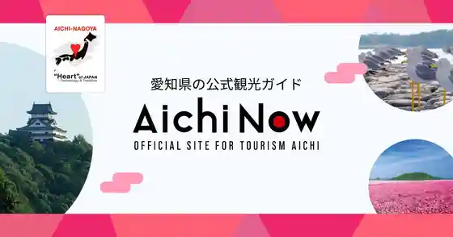
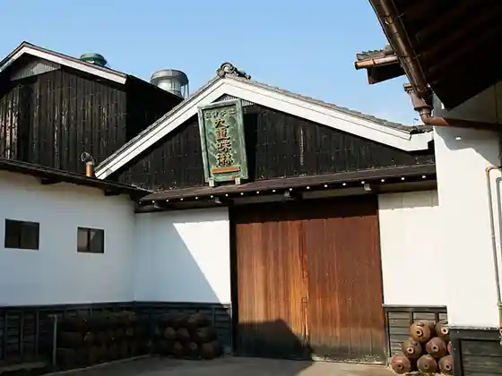

Hekinan to # Kyomo, Tamago Sutanpurarii
Hekinan, Aichi · 0566-95-9894 · Official / source link
Hekinan Kaihin Aquarium
Hekinan, Aichi · 0566-48-3761 · Official / source link
Sugi Seika Honshakojo
Hekinan, Aichi · 0566-45-2020 · Official / source link

Kokonoe Aji Rin
Hekinan, Aichi · 0566-41-0708 · Official / source link

Ebisen Kazoku Main Shop
Hekinan, Aichi · 0566-42-6100 · Official / source link
Eishiro Kawara
Hekinan, Aichi · 0566-48-5115 · Official / source link
Arigato Village (Shichi Fuku Jozo)
Hekinan, Aichi · 0566-41-1508 · Official / source link
Yahagi Kawa Sakura Zutsumi
Hekinan, Aichi · 0566-95-9894 · Official / source link
Nakayama Jinmei Sha
Hekinan, Aichi · 0566-42-1750 · Official / source link
Onin Tera
Hekinan, Aichi · 0566-48-5663 · Official / source link
Hekinan Fujii Tatsukichi Gendai Art Museum
Hekinan, Aichi · 0566-48-6602 · Official / source link
Hekinan Nogyo Kasseika Center Aoi Park
Hekinan, Aichi · 0566-43-0511 · Official / source link
Aburagafuchi Hana Shobu Sono
Hekinan, Aichi · 0566-41-3311 · Official / source link
Hekinan Akashi Park
Hekinan, Aichi · 0566-48-1722 · Official / source link
Hirofuji Sono
Hekinan, Aichi · 0566-41-0270 · Official / source link
Hekinan Su Ga Tobodo Park
Hekinan, Aichi · 0566-95-9910 · Official / source link